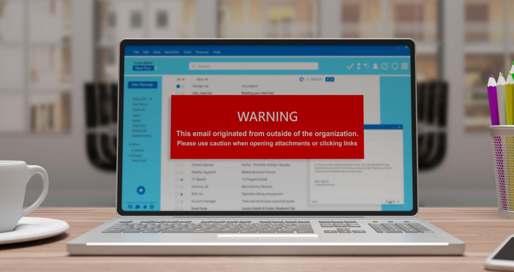
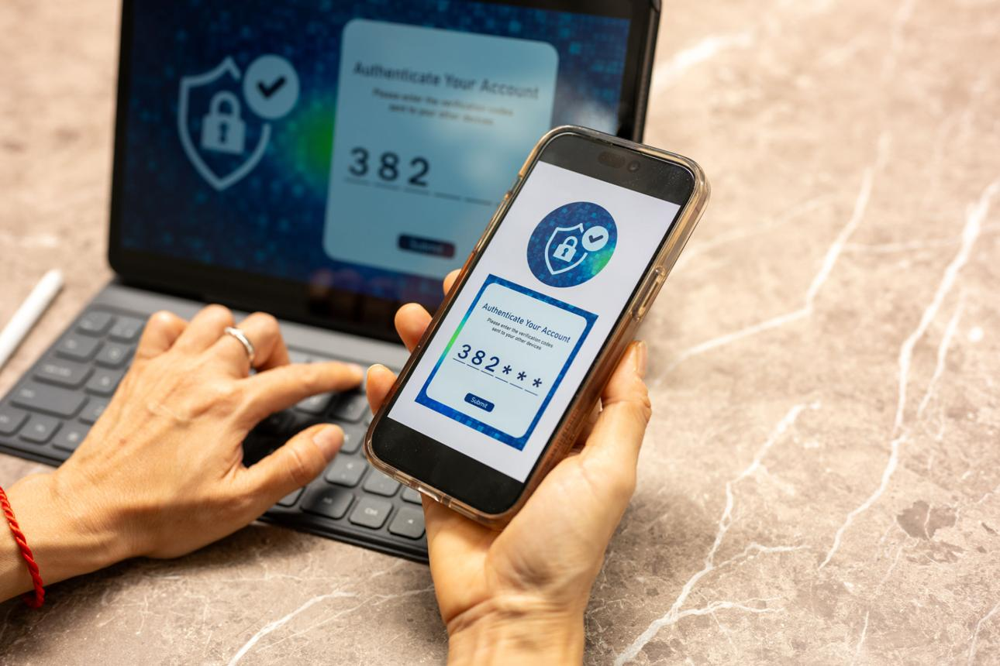

Cybersecurity for Small Businesses: Why Every Business Needs Strong Digital Protection in 2026
Revised on July 26, 2026.
In today's digital world, cybersecurity is no longer a concern only for large corporations. Small businesses, startups, schools, online stores, and even freelancers are increasingly becoming targets of cybercriminals. As more businesses rely on cloud computing, online payments, and remote work, protecting digital information has become one of the most important investments a business can make.
If your business uses computers, smartphones, websites, or online banking, cybersecurity should be one of your top priorities.
What Is Cybersecurity?
Cybersecurity is the practice of protecting computers, mobile devices, servers, networks, and digital information from unauthorized access, cyberattacks, theft, and damage.
Cybersecurity combines technology, security policies, and employee awareness to keep sensitive information safe from hackers and malicious software.
Why Cybersecurity Is Important
Every day, cybercriminals attempt to steal personal information, business data, passwords, and financial records. A successful cyberattack can result in:
- Financial losses
- Stolen customer information
- Website downtime
- Business interruption
- Identity theft
- Loss of customer trust
- Legal and regulatory issues

Even a single security breach can have serious consequences for a small business.
Common Cyber Threats
1. Phishing Attacks
Phishing emails trick people into revealing passwords, banking details, or other sensitive information by pretending to come from trusted organizations.
2. Ransomware
Ransomware locks business files and demands payment before restoring access. Regular backups can reduce the impact of these attacks.
3. Malware
Malicious software can steal information, damage files, or allow attackers to control infected devices.
4. Password Attacks
Weak or reused passwords make it easier for attackers to gain unauthorized access to business systems.
5. Data Breaches
Poor security practices may expose confidential customer or company information to unauthorized users.
How Small Businesses Can Improve Cybersecurity
Businesses don't need expensive systems to improve security. Simple steps can make a significant difference.
Use Strong Passwords
Create long, unique passwords for every account and avoid reusing them across different services.
Enable Multi-Factor Authentication (MFA)
MFA requires a second verification step, making it much harder for attackers to access accounts even if a password is compromised.
Keep Software Updated
Install operating system and application updates promptly. Many updates include fixes for known security vulnerabilities.
Backup Important Data
Maintain regular backups and store copies securely so important information can be recovered if systems are compromised.
Train Employees
Many attacks succeed because of human error. Teach employees how to recognize phishing emails, suspicious links, and social engineering attempts.
Benefits of Good Cybersecurity
Strong cybersecurity offers many advantages:
- Protects sensitive business information
- Reduces the risk of financial loss
- Increases customer confidence
- Supports business continuity
- Helps meet legal and regulatory requirements
- Protects online transactions
- Improves overall digital resilience
Cybersecurity Trends in 2026
Cybersecurity continues to evolve alongside new technology. Some of the biggest trends include:
- Artificial intelligence for threat detection
- Zero Trust security models
- Cloud security improvements
- Biometric authentication
- Passwordless login systems
- Security awareness training
- Enhanced protection for Internet of Things (IoT) devices
Businesses that adopt modern security practices are better prepared for emerging threats.
Tips for Individuals
Cybersecurity is just as important for individuals as it is for businesses.

To stay safe online:
- Never share passwords
- Avoid clicking unknown links
- Download apps only from trusted sources
- Use antivirus software
- Lock your devices with a PIN or biometric authentication
- Monitor your financial accounts regularly
- Be cautious when using public Wi-Fi
Conclusion
Cybersecurity has become an essential part of modern business and everyday life. As cyber threats grow more sophisticated, small businesses and individuals must take proactive steps to protect their data, finances, and digital identities. By using strong passwords, enabling multi-factor authentication, keeping software updated, and educating users about online risks, organizations can significantly reduce the likelihood of becoming victims of cybercrime.
Investing in cybersecurity is not just about preventing attacks—it's about building trust, protecting your reputation, and ensuring long-term success in an increasingly digital world.